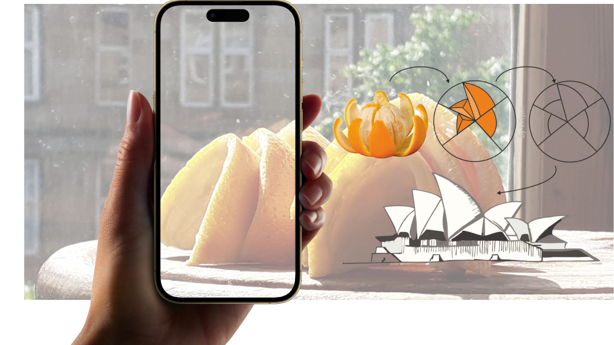
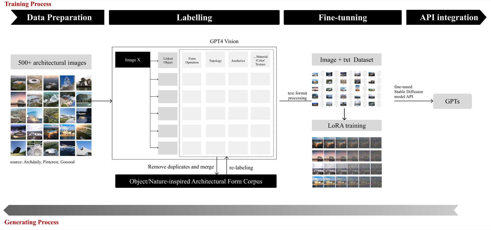
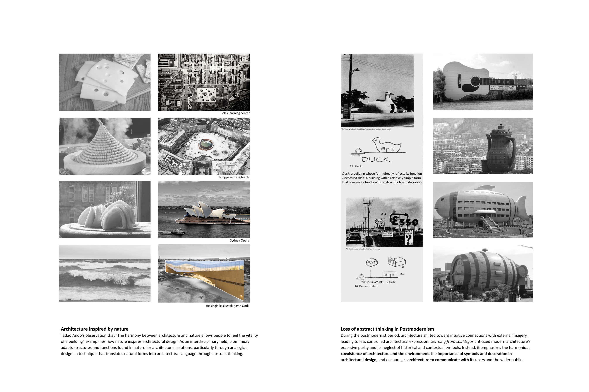
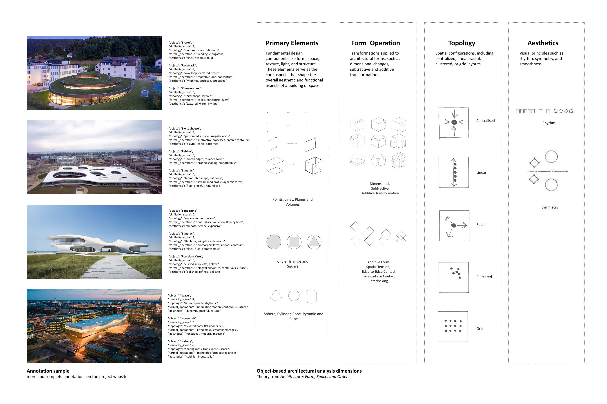
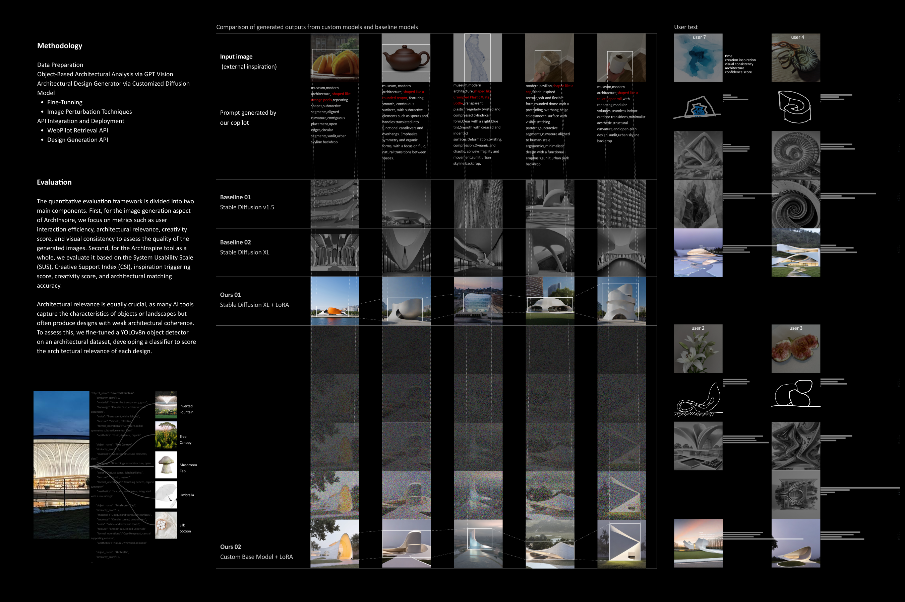

AI Agent · 2024
AI copilot for architectural concept design via design-by-analogy (vision-language annotation, custom generative models)
Case Study

In architectural concept design, transposing external stimuli through design by analogy offers profound inspiration, as seen in iconic structures like the Sydney Opera House. This approach goes beyond superficial visual similarities, aiming for deeper conceptual connections that enhance creativity and understanding of the built environment. However, existing AI tools often miss this nuanced abstraction, focusing primarily on visual aspects. This paper introduces an AI-augmented design copilot that enhances conceptual abstraction by leveraging extensive datasets, advanced annotation using vision-language models, and custom generative models, all seamlessly integrated to provide three key functions: an architectural search engine, bidirectional object-based architectural analysis, and an architectural design generator, creating a powerful tool for architectural inspiration. Validated through mixed-method evaluations with architects, the tool significantly improves creativity, innovation, and efficiency in the architectural design process, illustrating AI's potential to elevate architectural creativity and expand the horizons of design thinking.



